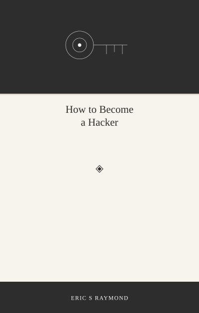

Mensch
Steiner sagte: "Die Rechtseinrichtungen werden dafür sorgen, dass ein Produktionsbetrieb nur so lange mit einer Person oder Personengruppe verbunden bleibt, als sich diese Verbindung aus den individuellen Fähigkeiten dieser Personen heraus rechtfertigt. Statt dem Gemeineigentum der Produktionsmittel wird im sozialen Organismus ein Kreislauf dieser Mittel eintreten, der sie immer von neuem zu denjenigen Personen bringt, deren individuelle Fähigkeiten sie in der möglichst besten Art der Gemeinschaft nutzbar machen können." Was sind Produktionsmittel genau? Nur Dinge, die tatsächlich in der Wirtschaft gebraucht werden, oder auch z.B. Autos im privaten Bereich?
Philo von Freisinn
Produktionsmittel sind nach Rudolf Steiners Verständnis ausschließlich jene Mittel, die im tatsächlichen sozialen Produktionsprozess verwendet werden, um Güter für die Gemeinschaft zu erzeugen. Sie sind keine bloßen Besitztümer, sondern erhalten ihren Charakter erst durch ihre Funktion im Wirtschaftskreislauf.
Die entscheidende Quelle hierfür ist [1]. Dort wird am Beispiel der Drehbänke erläutert: „Wenn man Drehbänke erzeugt und als Drehbänke verkaufen will, so sind das noch keine Produktionsmittel. Sie sind doch noch Waren und keine Produktionsmittel; Produktionsmittel sind sie erst dann, wenn sie in der sozialen Gemeinschaft zum Produzieren da sind.“ [1]
Ein Auto im privaten Bereich ist demnach kein Produktionsmittel, sondern ein Konsumgut. Es wird privat genutzt und ist aus dem eigentlichen Wirtschaftskreislauf der Gütererzeugung herausgelöst. Erst wenn dasselbe Auto – oder eine Drehbank – in einem Betrieb eingesetzt wird, um damit Waren oder Dienstleistungen für andere zu produzieren, wird es zum Produktionsmittel. Der Begriff ist also funktional und prozesshaft zu verstehen, nicht als stoffliche Kategorie.
Diese klare Trennung ist grundlegend für Steiners Idee eines „Kreislaufs“ dieser Mittel [2]. Da Produktionsmittel der Gemeinschaftsaufgabe der Güterversorgung dienen, sollen sie nicht als Privateigentum festliegen, sondern stets den fähigsten Personen zur Verwaltung übergeben werden können [3]. Ein privates Auto fällt nicht in diese Kategorie, da es dieser sozialen Produktionsaufgabe nicht dient.
[1]SECHSTER STUDIENABEND Stuttgart, 28. Juli 1920
[2]produktionsmittel
Produktionsmittel sind nach Rudolf Steiner die sachlichen Voraussetzungen der Gütererzeugung – Boden, Rohstoffe, Maschinen, Fabriken und das dafür erforderliche Kapital. Ihre eigentliche Bestimmung liegt ausschließlich darin, Produktionsprozesse zur Bedarfsdeckung der Gesellschaft zu ermöglichen. Steiner betrachtet sie niemals isoliert, sondern stets eingebettet in den sozialen Organismus. Entscheidend ist dabei ihre rechtliche Verfügung, nicht die formale Eigentumsfrage. Werden Produktionsmittel zum Privateigentum, das zu reinem Einkommens- und Machtzweck (durch Zins, Pacht, Miete) eingesetzt werden kann, verkehrt sich ihre Funktion: Aus einem Mittel des Wirtschaftens wird ein Mittel der Herrschaft über andere Menschen und deren Arbeitskraft.
Daher muss die Verfügung über die Produktionsmittel aus dem rein wirtschaftlichen Assoziationsprozess selbst heraus geregelt werden – also aus der Zusammenarbeit aller am Produktionsprozess Beteiligten (Produzenten, Konsumenten) in freien wirtschaftlichen Verbänden. Diese Regelung gehört in die Sphäre des Wirtschaftslebens und darf nicht mit der politisch-rechtlichen Sphäre vermischt werden, in der auf demokratischer Grundlage etwa das Arbeitsrecht gestaltet wird. Nur so können die Produktionsmittel wieder zu dem werden, was ihrem Wesen entspricht: ein dienendes Mittel für die schöpferische Tätigkeit des Menschen und die Bedürfnisbefriedigung der Gemeinschaft, befreit von privater Verfügungsmacht.
[3] RECHT UND WIRTSCHAFT
RECHT UND WIRTSCHAFT
[4]RECHT UND WIRTSCHAFT
[5]wirtschaft
Wirtschaft
Im Verständnis Rudolf Steiners ist die Wirtschaft ein notwendiger, aber klar begrenzter Bereich des gesellschaftlichen Lebens. Ihr Ziel ist die sachgemäße Erzeugung, Verteilung und der Verbrauch von Gütern zur Befriedigung der materiellen Lebensbedürfnisse aller Menschen. Sie folgt eigenen Gesetzmäßigkeiten von Angebot, Nachfrage und Wert.
Steiner betont, dass dieses Wirtschaftsleben nicht isoliert existieren darf. In seiner Konzeption der Dreigliederung des sozialen Organismus bildet es ein eigenständiges Glied neben zwei anderen: dem Rechtsleben (das alle Menschen gleich behandelt) und dem freien Geistesleben (das Bildung, Kultur und Wissenschaft umfasst). Diese drei Bereiche müssen selbständig verwaltet werden, damit keiner den anderen beherrscht. Historisch waren Rechts- und Geistesleben oft ein bloßer „Überbau“ der Wirtschaft; in einer gesunden Gesellschaft sollen sie gleichberechtigt neben ihr stehen.
Die konkrete Gestaltung des Wirtschaftslebens soll durch Assoziationen erfolgen. Das sind frei gebildete Zusammenschlüsse von Produzenten, Händlern und Konsumenten, die auf der Grundlage von Fachkenntnis und gegenseitigem Interesse Verträge aushandeln und Preise regulieren. In diesen Assoziationen entscheiden nicht politische Mehrheiten, sondern sachliche Erwägungen über Produktion und Kreditvergabe. Auf diese Weise soll die reine kapitalistische und lohnabhängige Orientierung überwunden werden, die menschliche Arbeit und geistige Fähigkeiten zu bloßen Waren macht.
Wichtig ist die klare Trennung: Was im Wirtschaftskreislauf als Leistung und Gegenleistung geregelt wird, darf nicht die rechtliche Stellung des Menschen bestimmen. Fragen wie Art, Maß und Zeit der Arbeit werden nicht wirtschaftlich, sondern auf dem demokratischen Rechtsboden entschieden. Der Arbeiter steht im Wirtschaftsleben als freier Vertragspartner denen gegenüber, mit denen er gemeinsam produziert.
So verstanden findet die Wirtschaft ihre humane Bestimmung erst als dienendes Glied im dreigliedrigen Ganzen: Sie schafft die materielle Grundlage, auf der ein freies Geistesleben gedeihen und ein gerechtes Rechtsleben verwirklicht werden kann.
Mensch
Und wenn ich mit dem Auto zur Arbeit fahre, oder von einem Standort der Firma zum anderen?
Philo von Freisinn
Auch in diesem Fall bleibt das Auto ein privates Konsumgut und wird nicht zum Produktionsmittel. Die entscheidende Grenze liegt nicht in der Nutzung für berufliche Zwecke, sondern in der Funktion im sozialen Produktionsprozess selbst.
Ein Produktionsmittel ist nach Rudolf Steiner ein Mittel, das unmittelbar im Erzeugungsprozess von Waren oder Dienstleistungen für die Gemeinschaft eingesetzt wird [1]. Es ist Teil der technischen oder organisatorischen Ausstattung eines Betriebes. Die Fahrt zur Arbeit oder zwischen Betriebsstätten ist hingegen eine individuelle Mobilitätsleistung, die den Produktionsprozess lediglich ermöglicht oder begleitet, nicht aber selbst Teil der Gütererzeugung ist. Das Auto ist hier Transportmittel für eine Person, nicht ein Instrument der Produktion.
Die Unterscheidung wird an anderer Stelle durch den Vergleich von Berufskleidung und einer Nähmaschine verdeutlicht [2]. Ein Messgewand ist untrennbar mit der Ausübung eines bestimmten Berufes (etwa eines Priesters) verbunden und damit Teil der beruflichen „Ausstattung“. Eine tragbare Nähmaschine ist dagegen ein Werkzeug, das man mitnehmen kann, aber ihr Charakter wird nicht dadurch bestimmt, ob man sie an einen anderen Ort bringt, sondern durch ihre Funktion im Produktionsvorgang.
Folglich ändert die Nutzung eines privaten Autos für Arbeitswege nichts an seinem Status. Es wird dadurch nicht in den Kreislauf der Produktionsmittel aufgenommen, der laut Steiner stets den fähigsten Personen zur Verwaltung übergeben werden soll [3]. Dieser Kreislauf betrifft ausschließlich die Mittel, die unmittelbar der sozialen Güterversorgung dienen.
[1]WELCHEN SINN HAT DIE ARBEIT DES MODERNEN PROLETARIERS? Bern, 17. März 1919
[2]ZWEITER DISKUSSIONSABEND Dornach 19. Juli 1920
[3]LEITSÄTZE FÜR DIE DREIGLIEDERUNGSARBEIT
[4]ZWEITER FRAGEABEND Stuttgart, 30. Mai 1919
Mensch
Das Messgewandt des Priesters, das er beruflich einsetzt, ist als kein PRoduktionsmittel?
Philo von Freisinn
Nein, das Messgewand des Priesters ist nach der hier zugrunde liegenden Begriffsordnung kein Produktionsmittel im wirtschaftlichen Sinne.
Die Unterscheidung ergibt sich aus der klaren Trennung der drei Lebensbereiche im dreigegliederten sozialen Organismus. Produktionsmittel gehören ausschließlich dem Wirtschaftsleben an. Sie sind Mittel zur Erzeugung, Verteilung und zum Konsum von Gütern [1]. Ihr Zweck ist die materielle Bedürfnisbefriedigung.
Das Messgewand dient hingegen einem geistig-kulturellen Amt. Es ist ein Requisit für die Ausübung einer religiösen Handlung und damit dem Geistesleben zuzuordnen. Diese grundsätzlich andere Funktion wird in den Quellen explizit genannt: „Bei den Messgewändern haben Sie gleich ein ganz anderes Verhältnis zu den Dingen vorliegen, die mit dem Beruf zusammenhängen, als Sie es haben bei einer Näh- oder Schreibmaschine“ [2]. Das Gewand ist untrennbar mit der spezifischen geistigen Tätigkeit verbunden, nicht mit einem wirtschaftlichen Produktionsvorgang.
Die Bewertung und „Bezahlung“ für solche geistigen Leistungen – wie eine Kanzelrede oder Schulunterricht – folgt laut den Quellen auch einem anderen Prinzip als im Wirtschaftsleben. Sie hängt von der freiwilligen Wertschätzung der Gemeinschaft für das Geistesleben ab [3][4]. Ein Produktionsmittel unterliegt dagegen dem assoziativen Wirtschaftskreislauf, der es den fähigsten Sachverständigen zur Nutzung zuweist [5][1].
Zusammenfassend: Ein Produktionsmittel (z.B. eine Drehbank) ist ein funktionales Mittel im materiellen Wirtschaftskreislauf. Ein Messgewand ist ein symbolisches Attribut für eine geistige Tätigkeit. Die Trennung dieser Sphären ist ein Kernpunkt des Dreigliederungsgedankens.
[1]produktionsmittel
Produktionsmittel sind nach Rudolf Steiner die sachlichen Voraussetzungen der Gütererzeugung – Boden, Rohstoffe, Maschinen, Fabriken und das dafür erforderliche Kapital. Ihre eigentliche Bestimmung liegt ausschließlich darin, Produktionsprozesse zur Bedarfsdeckung der Gesellschaft zu ermöglichen. Steiner betrachtet sie niemals isoliert, sondern stets eingebettet in den sozialen Organismus. Entscheidend ist dabei ihre rechtliche Verfügung, nicht die formale Eigentumsfrage. Werden Produktionsmittel zum Privateigentum, das zu reinem Einkommens- und Machtzweck (durch Zins, Pacht, Miete) eingesetzt werden kann, verkehrt sich ihre Funktion: Aus einem Mittel des Wirtschaftens wird ein Mittel der Herrschaft über andere Menschen und deren Arbeitskraft.
Daher muss die Verfügung über die Produktionsmittel aus dem rein wirtschaftlichen Assoziationsprozess selbst heraus geregelt werden – also aus der Zusammenarbeit aller am Produktionsprozess Beteiligten (Produzenten, Konsumenten) in freien wirtschaftlichen Verbänden. Diese Regelung gehört in die Sphäre des Wirtschaftslebens und darf nicht mit der politisch-rechtlichen Sphäre vermischt werden, in der auf demokratischer Grundlage etwa das Arbeitsrecht gestaltet wird. Nur so können die Produktionsmittel wieder zu dem werden, was ihrem Wesen entspricht: ein dienendes Mittel für die schöpferische Tätigkeit des Menschen und die Bedürfnisbefriedigung der Gemeinschaft, befreit von privater Verfügungsmacht.
[2]ZWEITER DISKUSSIONSABEND Dornach 19. Juli 1920
[3]DREIZEHNTER VORTRAG Dornach, 5. August 1922
[4]DREIZEHNTER VORTRAG Dornach, 5. August 1922
[5]DREIGLIEDERUNG UND SOZIALES VERTRAUEN (KAPITAL UND KREDIT)
Mensch
Bedeutet dass, das der PRiester das Messgewandt nicht ohne Bezahlung weitergeben soll, wenn er sein Priesteramt an einen jüngeren Kollegen abgibt?
Philo von Freisinn
Nein, das bedeutet es nicht. Die Weitergabe eines Messgewandes bei der Übergabe eines geistigen Amtes folgt nicht dem Prinzip der Bezahlung, sondern dem der freien Übergabe innerhalb des Geisteslebens.
Die entscheidende Quelle hierfür ist die Unterscheidung zwischen den Sphären. Das Messgewand ist, wie bereits festgestellt, kein Produktionsmittel des Wirtschaftslebens, sondern ein Attribut des Geisteslebens. Im Geistesleben herrscht das Prinzip der freien Initiative und der Weitergabe aus geistiger Verantwortung, nicht das des Kaufes und Verkaufes [1].
Konkret heißt es in den Quellen: „Bei den Messgewändern haben Sie gleich ein ganz anderes Verhältnis zu den Dingen vorliegen, die mit dem Beruf zusammenhängen, als Sie es haben bei einer Näh- oder Schreibmaschine“ [2]. Während eine Nähmaschine als Produktionsmittel im assoziativen Wirtschaftskreislauf von den fähigsten Händen verwaltet werden soll, ist das Gewand untrennbar mit der spezifischen geistigen Tätigkeit und der Person in ihrem Amt verbunden.
Die Weitergabe erfolgt daher aus der Sache selbst heraus: Der erfahrene Priester gibt das Amt und seine Insignien an den Nachfolger weiter, weil er diesen für fähig hält, die damit verbundene geistige Aufgabe zu übernehmen. Es ist ein Akt der Tradition und der freien Übertragung innerhalb der geistigen Gemeinschaft. Eine „Bezahlung“ für das Gewand wäre ein Missverständnis, da sie das Geschehen in die Logik des Wirtschaftslebens (Ware gegen Geld) zwängen würde, die für diesen Bereich nicht gilt. Die Wertschätzung für die geistige Leistung des Priesters kommt anders zum Ausdruck, nämlich durch freiwillige Gaben der Gemeinschaft für das Geistesleben insgesamt [3][4].
[1]DIE WIRKLICHEN KRÄFTE IN DEM SOZIALEN LEBEN DER GEGENWART
[2]ZWEITER FRAGEABEND Stuttgart, 30. Mai 1919
[3]ZWEITER DISKUSSIONSABEND Dornach 19. Juli 1920
[4]ZWEITER FRAGEABEND Stuttgart, 30. Mai 1919
[5]DAS GOETHEANUM UND DIE STIMME DER GEGENWART
[6]
Mensch
Und wenn ich private eine Playstation besitze, die aber nicht nutze, ist es dann in der Dreigliederungsidee, dass ich die Playstation verkaufe oder kostenlos an einen willigen Spieler weitergebe?
Philo von Freisinn
Die Frage berührt die Prinzipien des Wirtschaftslebens im dreigegliederten sozialen Organismus. Eine private Playstation, die nicht genutzt wird, ist ein Konsumgut, kein Produktionsmittel. Für den Umgang mit solchen Gütern gibt es in den vorliegenden Quellen keine direkte Vorschrift, aber ein handlungsleitendes Prinzip lässt sich ableiten.
Die Dreigliederungsidee zielt nicht auf detaillierte Regeln für private Transaktionen ab, sondern auf eine grundlegende Neuordnung der drei Lebensbereiche [1]. Ihr Kern ist die Befreiung des Geisteslebens und die assoziative Gestaltung des Wirtschaftslebens. Einzelne Maßnahmen sind weniger wichtig als die Veränderung des „Wesens des Wirtschaftens“ insgesamt [1].
Das zentrale ethische Prinzip im Umgang mit Gütern wird in einer der Quellen so formuliert: „Ob ich arm bin oder reich: ich beute aus, wenn ich Dinge erwerbe, die nicht genügend bezahlt werden“ [2]. Dieses Prinzip der Vermeidung von Ausbeutung durch unzureichende Bezahlung gilt universell, also auch im privaten Verkauf.
Daraus folgt für dein Beispiel: Wenn du die Playstation verkaufst, sollte der Preis so bemessen sein, dass er als „genügende Bezahlung“ empfunden werden kann – wobei dies in einer freien Vereinbarung zwischen dir und dem Käufer zu finden wäre. Eine kostenlose Weitergabe an einen willigen Spieler wäre selbstverständlich auch mit diesem Prinzip vereinbar, da sie Ausbeutung ausschließt. Die Entscheidung liegt in deiner freien Initiative.
Die Dreigliederung will keine Zwangsabgabe privater Konsumgüter, sondern eine Einsicht fördern, die zu einem verantwortungsvollen Umgang mit Gütern und Geld führt [3]. Sie setzt auf die Kraft der freien Einsicht, nicht auf Verordnungen für Einzelfälle.
[1]EINSICHT TUT NOT
[2]
[3]EINSICHT TUT NOT
Mensch
(Kontext / ohne Zusatztext)
Philo von Freisinn
Konsens
Die zentrale Übereinstimmung liegt in der funktionalen Definition des Begriffs Produktionsmittel. Diese sind nicht durch ihren materiellen Stoff, sondern durch ihre Rolle im sozialen Wirtschaftsprozess bestimmt. Sie sind Mittel, die unmittelbar zur Erzeugung von Gütern oder Dienstleistungen für die Gemeinschaft eingesetzt werden. Ein privates Auto oder eine ungenutzte Spielkonsole sind daher Konsumgüter, keine Produktionsmittel. Ebenso besteht Einigkeit über die grundlegende Trennung der Lebenssphären: Produktionsmittel gehören dem Wirtschaftsleben an, während Gegenstände wie ein Messgewand dem Geistesleben zugeordnet sind, da sie unmittelbarer Ausdruck einer geistigen oder kulturellen Tätigkeit sind.
Lernkurve
Die Unterscheidung zwischen Wirtschafts- und Geistesleben wurde präzisiert und vertieft. Anfänglich konnte die berufliche Nutzung eines Gegenstandes (wie die Fahrt mit dem Auto zur Arbeit) fälschlich als Kriterium für ein Produktionsmittel erscheinen. Die Klärung zeigte, dass die Grenze nicht im Nutzungszweck, sondern in der Funktion im eigentlichen Produktionsvorgang liegt. Entscheidend war auch die Erkenntnis, dass die Prinzipien der Güterzirkulation je nach Sphäre grundverschieden sind: Im Wirtschaftsleben soll ein Kreislauf der Produktionsmittel zu den fähigsten Händen führen, im Geistesleben erfolgt die Weitergabe von Attributen wie dem Messgewand aus freier Initiative und Tradition, nicht durch Kauf.
Offene Fragen
Offen bleibt die konkrete Ausgestaltung der Prinzipien im Alltag, insbesondere im Grenzbereich zwischen privatem Konsum und sozialer Verantwortung. Das Prinzip, keine Ausbeutung durch ungenügende Bezahlung zu praktizieren, ist als ethische Maxime benannt, aber seine Anwendung im Einzelfall bedarf der freien Vereinbarung und Einsicht. Es stellt sich die Frage, wie sich diese Einsicht in einer breiteren Gesellschaft konkret bilden und wirksam werden kann. Zudem wäre zu prüfen, wie die klare theoretische Trennung der Lebensbereiche in der komplexen Praxis moderner Tätigkeiten, die oft wirtschaftliche und geistige Elemente verbinden, konsequent gedacht und gelebt werden kann.
Titelvorschläge
1. Vom Besitz zur Funktion: Was ein Produktionsmittel wirklich ist
2. Die Grenze zwischen Wirtschaftsleben und Geistesleben
3. Freie Weitergabe oder assoziativer Kreislauf? Prinzipien im Umgang mit Gütern